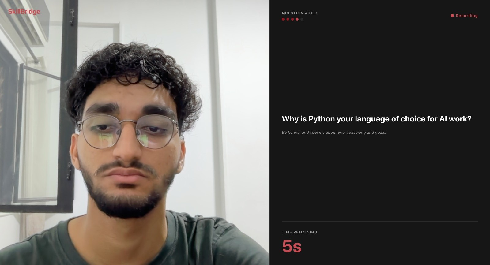
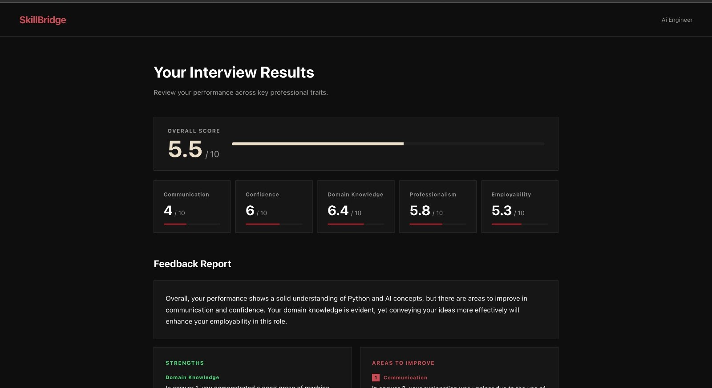

01The problem
Interview practice is expensive and awkward. Career coaches charge by the hour, friends give polite feedback, and practicing alone into a mirror tells you nothing measurable. Students — especially in markets like Egypt where mock-interview services barely exist — walk into their first real interviews blind.
The question SkillBridge answers: can a machine watch your practice interview and give you honest, structured, repeatable feedback?

02The approach
SkillBridge records a webcam interview session and scores it across five personality/presentation traits by fusing three signal streams:
- Speech — audio is transcribed, then answer content is scored by an LLM against the question rubric.
- Vision — MediaPipe-based eye-contact estimation tracks where the candidate actually looks during answers.
- Delivery — prosody and pacing features feed the trait model alongside the content scores.
Before committing to an architecture, I ran a proper multimodal study on the First Impressions V2 dataset — comparing XGBoost baselines on hand-crafted features against deep embeddings from wav2vec2 (audio), CLIP (vision), and MPNet (text). The study drove the final design instead of guesswork.
03The build
React front-end for session capture and feedback display; FastAPI backend orchestrating the ML pipeline; PyTorch models plus OpenAI APIs for content scoring. Everything modular — each modality is a swappable pipeline stage.

04Architecture X-Ray
Select a system component to inspect its responsibility and interface, or replay one representative interview request through the pipeline.